by Mário Braga
Heads-up
Inflation trend in Brazil
Inflation in Brazil has gone through sharp variations over the past couple of years. The changes follow long period when a higher level of price increases was tolerated - not to say encouraged - by the federal government. It was all part of a strategy to rely on a heated consumption market to boost the local economy.
It is a supply and demand logic. When a country's economy is growing, more people have jobs, wages normally go up, and consumers are more willing to spend money. With a high level of demand, suppliers can increase prices and still find people to pay for the products or services they offer. That is true for the local bakery and the hairdresser around the corner but also to the car manufacturer and the telecom provider.
When that happens, inflation goes up. In a recession, things work the other way around. The chart below illustrates how after significant declines in the economy in 2015 and 2016, inflation had a significant decrease in 2016 and 2017.
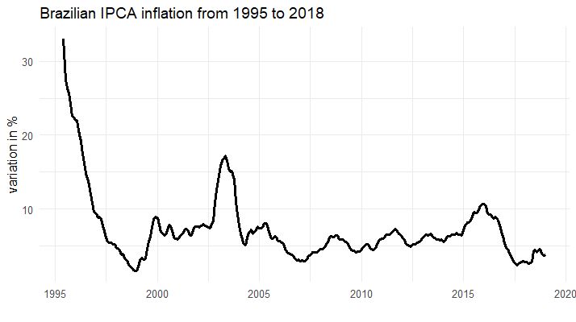
In 2018, the IPCA benchmark index ended at 3.75%, the second lowest reading in 12 years. Prices have not gone up yet because the economic recovery is still weak and unemployment remains high. But looking back, with all the ups and downs in the chart, it is clear that Brazil has struggled to keep its price dynamics under control.
An effective way to assess this issue is to compare how the actual rates fit the so-called inflation target system. In Brazil, such a framework was adopted in 1999. In short, it sets a goal for price increases. The Central Bank is the institution in charge of keeping prices at the desired level and to do so it uses monetary policy instruments - namely hikes or cuts in the interest rate.
Similarly to the supply and demand logic explained above, if higher interest rates makes it more expensive to finance a car or get a loan to build a new factory, it is likely that consumers and investments will postpone their plans. With less people willing to spend, shops and factories will likely avoid increasing prices or do so to the minimum necessary so they can get rid of the products on the shelves. In other words, the general level of prices will go up at a slower rate, meaning that inflation will be lower.
The target system
Currently, 28 countries adopt inflation targetting, according to the International Monetary Fund. The economic principle behind this is providing economic stability. Therefore, a country does not necessairly have to hit the target every single year, but should make sure it does not miss by much. That gives a comfortable level of predictability to the economic agents, either buyers or seelers, to plan their budgets for the upcoming months.
In Brazil, the system sets a central target and with a margin of tolerance around it. Back when it started, in 1999, the objective was to keep annual inflation at 8%. Between 2005 and 2018, the target was at 4.5%.
In the past couple of years, though, the National Monetary Committee (CMN) decided to reduce the tolerance band from 2 to 1.5 percentage points. From 2019 onwards, it has also lowered the central target itself in 0.25 percentage per year. Therefore, inflation is expected to end 2021 around 3.75%.
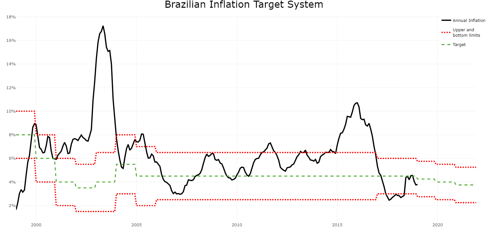
But it is noteworthy that such figures refer to an average of the country. When analysed in detail, inflation can have different trends, shapes and values.
A closer look
Different cities, different prices
One way to breakdown the numbers is looking at how inflation has behaved in different cities. In Brazil, the national statistics agency, IBGE, has compiled data on nine major metropolitan areas since 2019.
Although the major trend is the same - a relative stability from 2012 to 2014, a peak in 2015 and a decline afterwards -, it is possible to identify contrasting behaviours when it comes to price dynamics across the country.
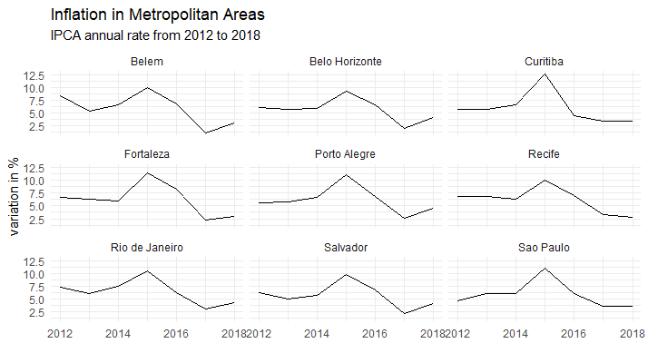
The reason why that is so is that each metropolitan area has some unique economic features. Unemployment has been historically higher in Salvador than in the rest of the country, for instance. São Paulo, whose economy accounts for over 10% of the national Gross Domestic Product, has one of the highest living costs of Brazil: wealthy paulistanos can spend small fortunes in rents, casual dining, and private education.
This shows that to calculate inflation it is necessary to go beyond the price variation itself. It is also necessary to take into account what people usually buy and how much of their budget a given item takes.
That is why IBGE has a structured methodology to collect all the information needed to find the price increase rate for the country. To do so, they have researched and established a standard basket of goods the average Brazilian consumes.
What makes up the IPCA index, after all?
The first level this information is organized is by what the statistics agency calls "Groups." The methodology used to calculate the IPCA divides services and goods into nine broad categories: Food and Beverages, Transportation, Housing, Healthcare, Personal Expenses, Education, Household Goods, Clothing and Communication.
The chart below shows how each of these groups contributed to the 2018 inflation in Brazil. The position in the y-axis indicates the price variation and the size of the circle, the weight each group has in the composition of the index. That is, how much of people's budgets go to the items from that category. The combination of these two pieces of information results in the actual contribution of that group to the annual inflation rate. This figure is represented by the position of each circle in the x-axis.
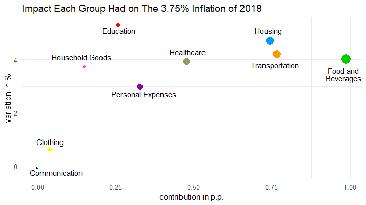
Note how the prices in Food and Beverages and Healthcare rose by around 4% last year. However, since people spend money more regularly and in bigger ammounts by the end of the month with meals than with drugs, the circles have different sizes. As a result, the impact of the group Food and Beverages to the IPCA is more significant.
In contrast, the portions of Brazilians' budgets that goes into cellphones and internet or clothes and shoes is so small, that regardless of the fluctuation of prices in these groups, their contribution to the annual rate is likely to be low.
Different groups, different impacts
The bar chart below breaks down the 3.75% rate and shows which groups were the main responsibles for the increase in prices last year. The top three "vilains" were Food and Beverages, which accounted alone for over 26.3% of the annual inflation, and Transportation and Housing, with around one-fifth of the rate each.
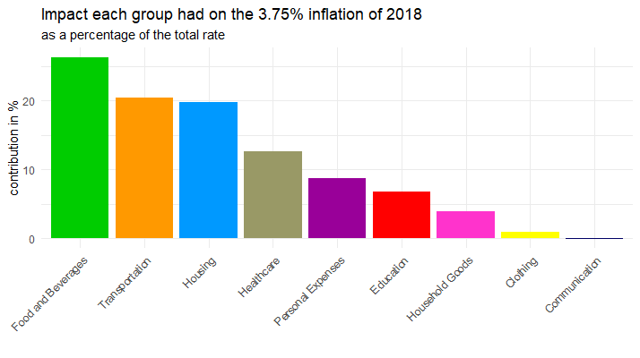
On the other hand, the price fluctuations of the Clothing group represented less than 1% of the total rate, while a drop in prices in the Communication category helped to bring inflation down - but merely by 0.08%.
Changes throughout the years
As consumption habbits change, so does the composition of the IPCA. The statistics agency updates every year and although the updates do not mean drastic shifts, they do make a differente. For instance, from 2012 to 2018, the importance of the Food and Beverage group in the overall basket increased from 23.1% to 25.7%, while Communication's weight dropped from 5.9% to 3.6%.
As prices also fluctuate at different rates as years go by, the contribution of each group is constantly changing. Events such the burst of a housing bubble, severe weather conditions affecting the production of vegetables or even government decisions to charge more for gas or urban bus fares have an impact on the composition of the IPCA.
Here you see how the contribution from the same nine groups varied between 2013 and 2018.
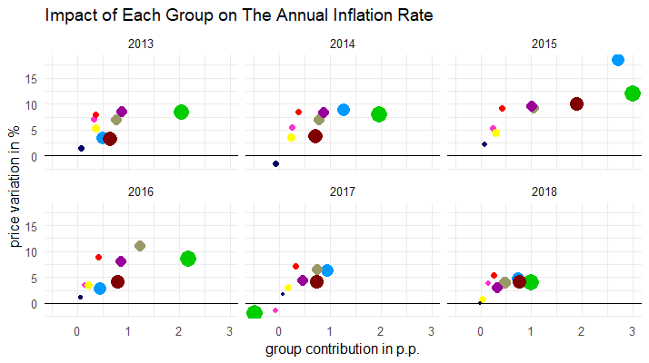
This scatter plot helps to tell the same story about the price dynamics the first line chart did but from a different angle. The way the circles are more spread in 2015 explain why inflation hit 10.67% that year. Conversely, in 2017, they are mostly clustered and much closer to the x-axis, showing the increase in prices was lower and thus, the inflation rate that year was 2.95% - the first time during the targetting system in which the rate ended an year below the bottom band limit.
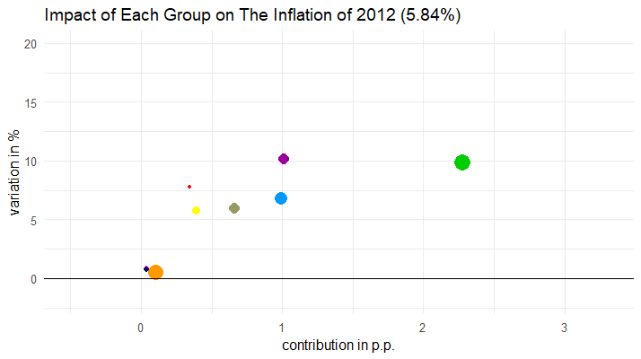
By isolating the price changes of each category, it is easier to observe how their impact changes each year. In groups with low weights, such as Clothing, Communication, Education and Household Goods, it does not make much difference how more or less expensive things are. Their importance in the composition of the index is so small, that no matter how up or down the circle moves, it affects very little its position in the horizontal axis.
On the other hand, since Food and Beverages, Housing and Transportation account for nearly half of the index, the changes in prices represented by the movement in the vertical axis results in more significant changes in the horizontal range. In other words, the cheaper or the more expensive products from these groups get, the more likely the IPCA is to follow the movement either up or down.
Here you can see how dynamic those changes are and how the shifts of the bigger circles representing the groups with bigger weights drive the annual rates up and down throughout the years. The color shows how strong was the contribution of a given group to the inflation in the period ranging from 2012 to 2018. The darker the tone of blue the higher the impact on the price increase.
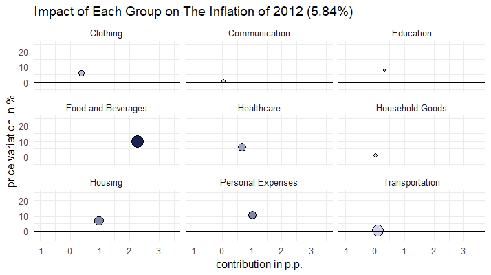
Diving deeper
Item by Item
A more detailed way to analyse the same pattern is looking at the products that are part of each group. IBGE breaks down the composition of the IPCA into 52 items.
Here you see the price variation and the contribution of each of them to the same 3.75% inflation rate recorded in 2018.
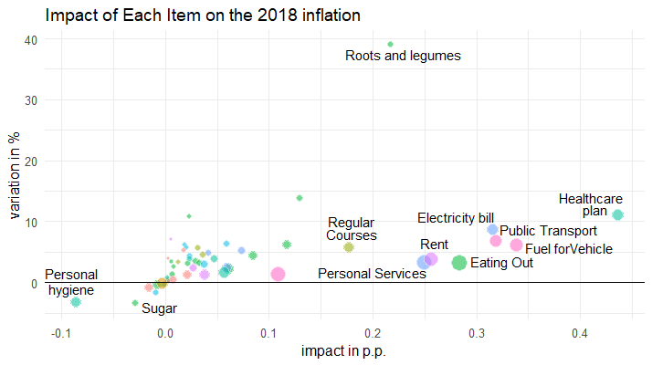
Note that despite leading the price increases with a 38% rise, roots and vegetables have a relatively smaller weight than other items and therefore, it is not the main contributor among all the items.
Also, although Food and Beverages leads the ranking as a group, since it is composed by 17 items, their contribution is more evenly spread than among the six items that make up the Healthcare category.
Subitem by Subitem
An even more granular breakdown shows the price variation and contribution to the main index of all of its 373 subitems. The plot shows how the vast majority of the subitems have small contributions to the overall index because of their small weight. That is why all the small circles are clustered next to the y-axis.
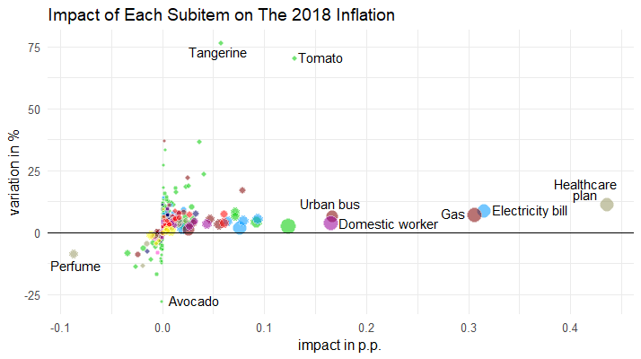
Tangerine and Tomato, which ended 2018 over 70% more expensive than in the previous year, do not make it to the top 5 contributors to the inflation of the year. Their weight is too small. On the other hand, healthcare plan, with a price increased of 11%, leads the ranking. Together, the top 10 subitems accounted for 50% of the inflation rate of 2018.
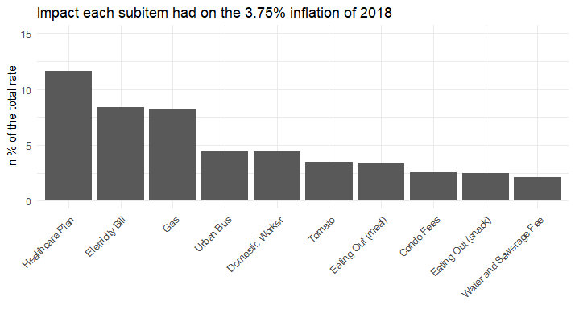
At the bottom of the list, the 10 subitems with the main negative contributions to the index have way less importance. Combined, they represented -0.26 percentage point to the final calculation of the 3.75% rate.
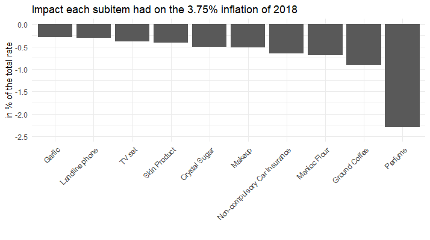
Your IPCA
Since each item has an impact on the inflation rate of the basket of goods selected by IBGE, if a customer does not buy one of the products that got more expensive, for instance, the overall inflation of their basket of goods will be different than the average rate - in this case lower. However, if they skip the ones that got cheaper, their average price increase will be higher than the official rate.
The Inflation Calculator allows you to select the products you buy from the list that make up the IPCA so you discover you what was your inflation rate in 2018. Click in the button below and find out.